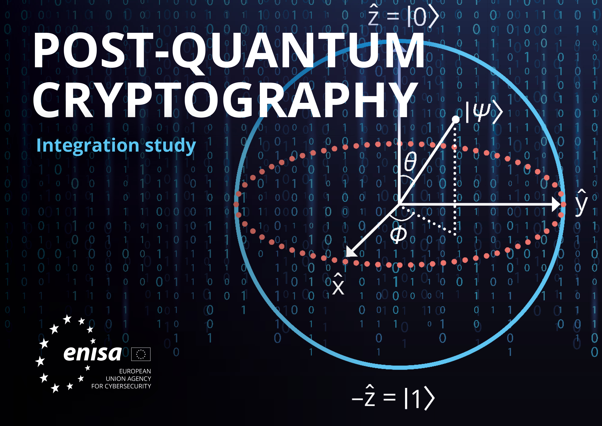

Budúcnosť

Post quantum encryption
The future of safety in online communication stands at the precipice of a significant
transformation, largely driven by advancements in cybersecurity technologies. As the digital
landscape continues to evolve, one promising avenue that holds immense potential for
bolstering online safety is post-quantum encryption. Post-quantum cryptography aims to
develop encryption methods resilient against attacks by quantum computers, which possess the
computational power to break traditional cryptographic systems. The integration of
post-quantum encryption protocols, such as lattice-based cryptography or hash-based
signatures, could fortify the security of data transmission and storage, offering a robust
defense against potential quantum threats. Researchers like Michele Mosca and others
emphasize the urgency of adopting post-quantum encryption as a proactive measure to
safeguard sensitive information in the impending era of quantum computing.[1]
Moreover, the future of online safety hinges not only on technological advancements but also
on comprehensive policy frameworks and global collaboration. International cooperation is
pivotal in establishing standardized cybersecurity protocols and frameworks to ensure
interoperability and a cohesive approach toward safeguarding online communication.
Experts
like Tal Kopan emphasize the significance of global partnerships and unified efforts
to
combat cyber threats, transcending geographical boundaries and addressing the
multifaceted
challenges of online security.[2]
Additionally, a
renewed focus on user education and
awareness regarding cyber hygiene and best practices in online behavior, advocated by
cybersecurity experts like Brian Krebs, plays a pivotal role in fortifying the human
element
against potential cyber risks.[3]
As we navigate the evolving landscape of online communication, it becomes increasingly
evident that the future of safety requires a holistic approach. This approach involves not
only technological innovation and policy measures but also a collective responsibility among
stakeholders to prioritize security. Embracing emerging technologies like quantum-resistant
encryption, fostering international cooperation, and empowering users through education will
collectively shape a safer digital environment, ensuring the integrity and confidentiality
of online interactions.
Obr.2
Contextual pictures




Copywight © 2023 All rights reserved.
[1] Mosca, M., & Ekert, A. (2017). Post-Quantum Cryptography. Nature. [2] Kopan, T. (2018). International Cooperation in Cyberspace: Toward a Strategic Framework. Council on Foreign Relations. [3] Krebs, B. (2018). Spam Nation: The Inside Story of Organized Cybercrime-from Global Epidemic to Your Front Door. Sourcebooks.